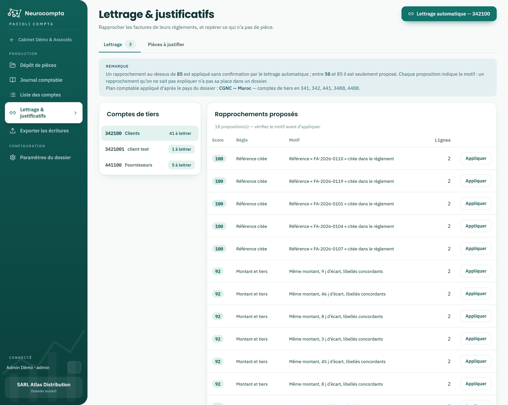

Lettrer et justifier
Rapprocher factures et règlements, réclamer les pièces manquantes.
Le lettrage consiste à faire s'annuler les lignes d'un compte de tiers : une facture avec son règlement. L'écran vous propose les rapprochements, avec leur motif en clair — un rapprochement qu'on ne sait pas expliquer n'a pas sa place dans un dossier.
Le second onglet liste les mouvements bancaires sans justificatif. Vous pouvez y déposer la pièce manquante en un clic.

Lire une proposition
Chaque proposition porte un score et la règle qui l'a produite. Plus le score est élevé, plus le rapprochement est sûr.
- Référence citée : le numéro de la facture apparaît dans le libellé du règlement. C'est la preuve la plus directe.
- Montant et date : montant identique, dates rapprochées.
- Montant et tiers : montant identique, et libellés désignant visiblement le même tiers.
- Règlement groupé : un versement solde plusieurs factures à la fois.
Appliquer les rapprochements
- « Appliquer » valide une proposition et lui attribue une lettre.
- « Lettrage automatique » applique d'un coup tous les rapprochements sûrs, sur le compte ouvert ou sur tous les comptes. Les moins certains restent proposés, à valider à la main.
- Pour lettrer vous-même, cochez des lignes : l'écart s'affiche en direct et le bouton ne s'active que si le groupe s'annule.
- La lettre affichée sur une ligne est cliquable : elle défait le lettrage, après confirmation.
Pièces à justifier
L'onglet liste les mouvements des journaux de banque qui posent problème. Deux signaux, qui se cumulent souvent et appellent deux actions distinctes.

- Sans pièce : aucun justificatif n'est rattaché. Il est à réclamer au client.
- À imputer : le mouvement dort sur un compte d'attente, son affectation reste à trancher.
- Le bouton « Déposer la pièce » transmet le justificatif directement depuis la ligne concernée.
Après le dépôt d'un justificatif
- Le mouvement quitte immédiatement la liste des pièces manquantes.
- Dès que l'analyse produit l'écriture de la pièce, celle-ci est lettrée automatiquement avec le mouvement bancaire.
- Si les montants ne s'annulent pas — règlement partiel, écart de change — rien n'est forcé : le lettrage reste à faire à la main.
Les comptes lettrables dépendent du plan comptable du dossier, donc de son pays. Le plan appliqué est rappelé en haut de chaque onglet.
Un lettrage doit toujours être de solde nul. Si le groupe ne s'annule pas, c'est qu'il reste quelque chose à régler : ne forcez pas, cherchez la ligne manquante.